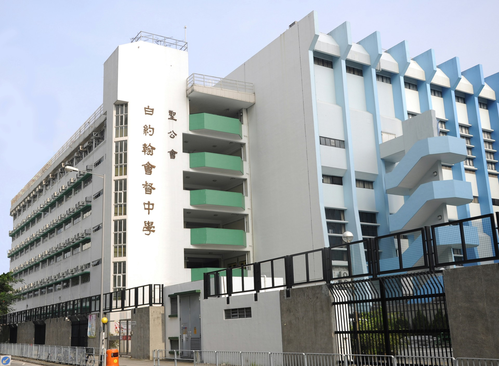
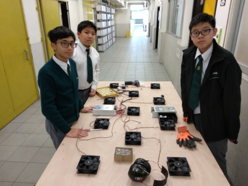
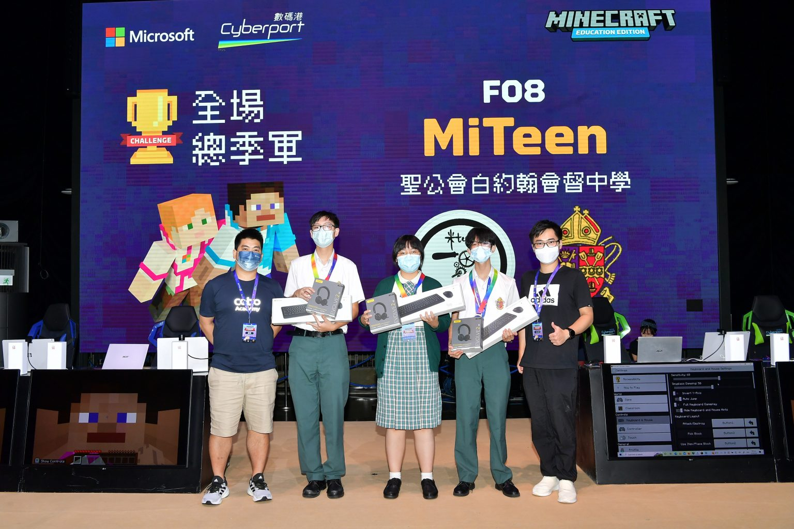

Andy Wong's (黃修譽) School Memories
SKH Bishop Baker Secondary School · 聖公會白約翰會督中學
2017 — 2023

SKH Bishop Baker Secondary School
聖公會白約翰會督中學 · Yuen Long, Hong Kong
Completed HKDSE at SKHBBSS. Actively participated in the MiTeen Academy — a school-based STEAM innovation club where students design and build engineering projects from scratch, from PCB fabrication to woodworking.
「山竹」Electronic Air Hockey Table
MiTeen Academy · 2018 — 2019

「山竹」Mangkhut — Electronic Air Hockey Arcade Machine
A full-scale 3ft × 6ft electronic air hockey table designed and built entirely by MiTeen members at SKHBBSS. The project involved hands-on experience across multiple engineering disciplines — from designing PCBs and wiring Arduino Mega controllers to drilling 2,640 air holes across 6 passes (15,840 total manual drilling operations).
My Role
Mechanical Assembly Team Lead (機械裝嵌組長) — responsible for the wooden framework, panel fabrication with 2,640 precision air holes, fan matrix installation, adjustable table legs, and structural assembly of the entire machine.
Technical Specifications
- Panel: 3ft × 6ft, 8mm acrylic board with 2,640 × 5mm air holes
- Air System: 11× DC12V 2.7A fans in matrix layout
- Controller: Arduino Mega 2560 with custom PCB
- Sensors: Laser detectors for goal scoring, IR sensors for dead zones
- Lighting: Addressable LED strips (red/blue/green/white) with scoring animations
- Audio: MP3 module with win/lose/draw sound effects and countdown warnings
- Power: AC220V → DC12V with solid-state relay (SSR) for fan control
- Scoring: Real-time LED display, timed match format with fast-paced continuous play
MiTeen Academy
SKHBBSS STEAM Innovation Club · 2018 — 2023
MiTeen Academy — School-Based STEAM Innovation Club
MiTeen Academy (米Teen) is SKHBBSS's flagship STEAM club where students go beyond textbooks — designing, prototyping, and building real engineering projects from scratch. Based in Room 506, members meet after school and during lunch to work on hands-on projects spanning electronics, programming, woodworking, and design.
My Involvement
- Regular attendee at lunchtime and after-school sessions in Room 506
- Collaborated on multiple interdisciplinary projects with 15+ club members
- Participated in weekly project meetings with formal agendas and minutes
- Learned hands-on skills: PCB fabrication, wood joinery, power tools, LED circuits
- Contributed to mechanical design and assembly across various builds
- Helped exhibit projects at public venues (e.g. Kwun Tong Waterfront Discovery Festival 2019)
ICanCode Robot Competition 2022
全港中小學機械人競賽 · 2022 — Champion in Eco-friendly Robot Design 🏆
🏆 Champion — Eco-friendly Robot Design
Won Champion in the Eco-friendly Robot Design category at the territory-wide ICanCode Hong Kong Primary & Secondary School Robot Competition. Designed and programmed an autonomous robot with sustainability-focused engineering — optimizing material usage, energy efficiency, and environmentally-conscious design principles while completing challenge missions under timed conditions.
Key Takeaways
- Designed and built an eco-friendly competition robot from scratch
- Programmed sensor-based navigation and object manipulation
- Applied sustainable design principles to robotics engineering
- Collaborated under pressure with time-constrained missions
- Competed against schools across Hong Kong and won top honors
Interschool Minecraft eSports Champion League
Microsoft Hong Kong · 2022 — 2nd Runner-up 🥉

🥉 2nd Runner-up — Team MiTeen (SKH Bishop Baker Secondary School)
Competed in Microsoft Hong Kong's inaugural Interschool Minecraft eSports Champion League, an education-focused eSports tournament designed to cultivate creativity, computational thinking, teamwork, and problem-solving through Minecraft: Education Edition. Out of 102 teams from over 50 secondary schools across Hong Kong, Team MiTeen fought through 9 months of online challenges to reach the top 21, ultimately securing 2nd Runner-up on the professional eSports stage at Cyberport.
Competition Format
- 3 qualifying rounds + 1 final round testing speed & reaction, coding knowledge, problem solving, collaboration, and real-time strategy
- Powered by Acer Predator laptops, Jabra communication devices, and SmarTone 5G network
- First Minecraft competition featured on a professional eSports stage in Hong Kong
- Supported by Microsoft Global Training Partners: Cobo Academy, Coding101, Gamenoodlesoup, Koding Kingdom
Reflection
"The MiTeen air hockey project was where I first fell in love with building things. Drilling 2,640 holes by hand, learning to use power tools, fabricating PCBs — it taught me that engineering isn't just about code, it's about patience, craftsmanship, and teamwork. Competing on stage at Cyberport in the Minecraft eSports League showed me a different kind of thrill — real-time strategy, split-second decisions, and the energy of a live audience. MiTeen Academy wasn't just a club; Room 506 was our workshop, our lab, and our playground. Those experiences shaped who I am as an engineer and entrepreneur today."
— Andy Wong (黃修譽), Mechanical Assembly Team Lead